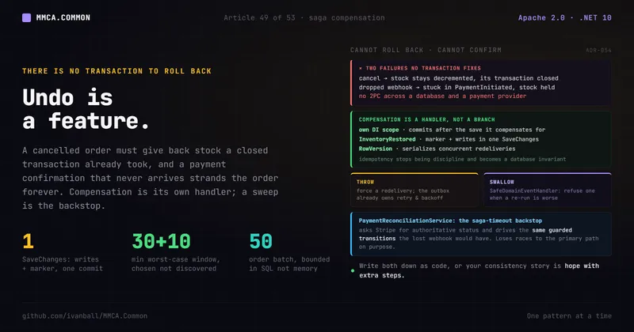

Core patterns · No. 49
Undo Is a Feature: Saga Compensation and the Reconciliation Backstop

A cancelled order has to give back stock that a transaction closed minutes ago already took, and a payment confirmation that never arrives strands the order forever. Here is compensation as its own event handler, idempotency as a persisted marker committed in the same transaction as the writes it guards, an honest account of which failures get retried and which only get logged, and a periodic sweep as the saga-timeout backstop.
Checkout is the easy part. In MMCA.Store's Sales module it is genuinely atomic: the order insert, the cart
transition, and the conditional stock decrements all commit inside one explicit local transaction
(ExecuteInTransactionAsync at CheckOutHandler.cs:80-82 over the WriteAsync delegate :122-183,
insert :163, decrements :169, save :174), and a failed decrement returns a failed Result that rolls
the whole thing back. One database, one transaction, no drama. The same delegate also arms the order's own
unpaid-payment deadline as a scheduled row (:180), so the deadline commits with the order or rolls back
with it (comment :176-179).
Then the money moves at Stripe, and the confirmation comes back later, as a webhook, from outside your database entirely. And two things go wrong that no transaction can fix:
- A later step invalidates an earlier one. The customer cancels. The stock that checkout committed is still decremented, and you cannot roll that decrement back, because its transaction closed minutes ago.
- The external confirmation never arrives. An endpoint outage that outlasts Stripe's retry window, a
misconfigured webhook secret, and the order sits in
PaymentInitiatedforever with its stock held.
The instinct is to reach for a transaction that spans both, and there isn't one. There is no two-phase commit across a database and a payment provider, and there would not be one worth having even if the provider could enlist. So the question is not "how do I roll this back." It is "what do I do instead, and how do I make it disciplined enough to trust." That is the decision recorded in ADR-054.
Why it matters
The rubric has two categories aimed straight at this. §6 (CQRS and Event-Driven Design, heading at
ArchitectureEvaluationCriteria.md:229) asks for idempotent consumers (:238) and for eventual-consistency
boundaries that are explicit and documented in an ADR (:239), with "consumers that aren't idempotent
and break on redelivery" listed as a red flag (:245). §29 (Resilience, Reliability and Business
Continuity, :775) is a weight-3 category (:795) that asks for failure isolation (:780) and graceful
degradation (:781), and names "retries without backoff/idempotency (retry storms, duplicate side
effects)" as its own red flag (:791).
Note what those two demand together: not just that you retry, but that retrying is safe. That is the hard half. Delivering an event at least once is a solved problem (the transactional outbox, ADR-003). Making the handler survive being run twice is where systems quietly rot.
And it is the question the neighbouring records leave open on purpose. ADR-003 gets an event out of the
process at least once. ADR-021 stops a broker redelivery from being applied twice at the consume edge.
ADR-006 decides database-per-service and records "no cross-database transactions, no two-phase commit" only
as a cost it accepts, without saying how that cost gets paid (ADR-054:50-55). None of them says what a
multi-step workflow does when step two fails or step three never reports back.
The MMCA answer: compensation is a handler, not a branch in the command
The command handler does one thing, and it does not even own the plumbing for that.
CancelOrderHandler derives from MutateEntityHandlerBase<CancelOrderCommand, Order, OrderIdentifierType>
(CancelOrderHandler.cs:27-31), so the load, the rowversion stamp and the save belong to the base class. The
handler contributes three overrides: the id to load (:39), the client's last-seen rowversion so a
stale-view cancellation fails with a conflict (ADR-035, :46), and the mutation itself (:55-67). It does
not touch inventory, and its own remarks say so (:49-54).
The mutation is two steps: retire the payment provider's live checkout session, then call the guarded
transition entity.MarkAsCancelled() (:60-66). That first step is the one compensating action that is
deliberately inline rather than in a saga handler, and the class documentation argues the case (:17-25):
an order can only be cancelled out of PaymentInitiated while the provider still serves a payable hosted
page, so the cancel has to answer "has this already been paid?" before it commits. A saga step runs
after the commit and could only ever discover the money afterwards, with the order already Cancelled and a
manual refund the only remedy left. So RetirePaymentSessionAsync (:90-126) hands the session to the
shared PaymentSessionRetirement.RetireAsync, which reads the session status, expires the hosted page, and
reads the status again when the expire fails (:99-103). When the session turns out to be paid, the
handler refuses the cancellation with OrderCancellationErrorCodes.PaymentAlreadyCompleted
(:110-118). Every other outcome (already expired, session gone, provider unreachable) is non-fatal: it is
logged and the cancellation proceeds (:105-108, :120-123).
Order.MarkAsCancelled() (Order.cs:551) asks the current state object whether the transition is legal
and, on success, records a domain event (Order.cs:559). OrderCancelled is a plain BaseDomainEvent
(OrderCancelled.cs:6-9), not an integration event, so it dispatches in-process after the save.
Restoring the stock is a separate class: OrderCancelledSagaHandler : IDomainEventHandler<OrderCancelled>
(OrderCancelledSagaHandler.cs:40-42). Notifying the customer of a failed payment is another one,
OrderPaymentFailedSagaHandler (OrderPaymentFailedSagaHandler.cs:22-24). This is the choreographed
shape: each step raises an event, and each follow-up or compensating action lives in its own handler. A new
compensating action that can run after the commit (a refund, another notification) is a new handler, not an
edit to the command.
Each handler runs in its own DI scope. Domain-event handlers are registered as singletons by the
framework's convention scan (ScanModuleApplicationServices at
MMCA.Common.Application/DependencyInjection.ModuleScanning.cs:46, with the comment at :51 stating that
they are singletons that create their own DI scopes internally, and WithSingletonLifetime() closing that
scan at :56), so every handler opens a scope through IServiceScopeFactory and resolves what it needs from
that scope (OrderCancelledSagaHandler.cs:49-51, OrderPaymentFailedSagaHandler.cs:31-32). The consequence
is the important part: compensation commits on its own, after the originating save, rather than joining
the transaction it is compensating for. That is what makes it compensation rather than a rollback.
The marker: idempotency as a database invariant
Here is the part worth stealing even if you never touch this framework.
At-least-once delivery means the compensating handler will eventually run twice. If restoring stock is not idempotent, the second run inflates inventory, and you have turned a reliability mechanism into a data-corruption mechanism.
MMCA.Store makes it idempotent with a persisted marker on the aggregate. Order.InventoryRestored
(Order.cs:122, documented :116-121) is a boolean with a private setter, and MarkInventoryRestored()
(Order.cs:571-594) is a guarded transition like any other: it refuses on a non-cancelled order
(:573-580) and refuses a second call (:582-589), both as Result.Failure with named invariant codes.
The handler runs the whole restoration as one ExecuteInTransactionAsync delegate
(OrderCancelledSagaHandler.cs:55-57, the delegate RestoreAsync at :64-160), and inside it does five
things in order:
- Loads the order with its lines, tracked, in its own scope (
:70-75). - Checks the marker first and returns success without writing anything if it is already set (
:84-88). - Reads the matching inventory rows non-tracking (
asTracking: false,:98) and with the soft-delete filter deliberately turned off (ignoreQueryFilters: true,:103), then runs them through a static, pure domain service with no infrastructure dependencies,InventoryRestorationDomainService.RestoreInventory(:108; the static class atInventoryRestorationDomainService.cs:10, "pure domain service" comment:8, method:24-51). That call validates every increase against the inventory invariants and hands back either a failure carrying every rejected error (:41-50) or the variant ids it could not match (:33-38), which the handler logs by name (OrderCancelledSagaHandler.cs:117-123). Its in-memory increase lands on the non-tracking snapshot and is never saved (comment:96-97, class doc:30-32). - Sets the marker (
:130) and saves it first (:139). - Moves the stock through
IInventoryAllocationService.IncrementAsync, a relative atomicUPDATErather than a load-edit-save, for the lines that matched a row (:141-156).
The transaction is the whole design. The marker and the increases commit together or roll back together,
against the same database: a failed Result from the delegate rolls back everything it wrote, marker
included (DbContextFactory.cs:608-614), and a throw does the same (:657-661). So the marker cannot exist
without the writes it guards, and the writes cannot land unmarked. Idempotency stops being handler
discipline and becomes a database invariant.
Step 5's relative update is there because checkout never stops. Checkouts decrement the same inventory rows
with atomic updates at any moment, so a tracked restore would either overwrite those decrements or fail on
the row's concurrency token (class doc OrderCancelledSagaHandler.cs:26-33). Validating on a snapshot and
moving the stock with a relative update keeps the restore out of that race entirely.
Step 3's filter override is a smaller decision with a real consequence. A retired variant is
soft-deleted, not removed, and the stock a cancelled order is returning still belongs to that row: without
ignoreQueryFilters, the row is invisible to the handler and the returned quantity is silently dropped
(the comment saying so is at :99-102).
This is why ADR-054 says the marker is strictly stronger than the ADR-021 inbox (ADR-054:219-222).
The inbox records a message id after the handlers have succeeded, which leaves a narrow crash window
between the handler's commit and the inbox write. A marker committed with the writes has no such window.
The two are complementary rather than competing: the inbox dedups broker redeliveries between services, the
aggregate marker dedups in-process handler re-runs.
Concurrent redeliveries are handled by a different mechanism. The marker check is a read, so two
deliveries can both pass it. Every auditable entity carries a RowVersion concurrency token
(AuditableBaseEntity.cs:53), configured automatically on every non-owned auditable type by
ConfigureConcurrencyTokens (ApplicationDbContext.cs:588-608, called from OnModelCreating at :420,
ADR-035). Both deliveries carry the same original token into the marker save. One commits; the other gets
DbUpdateConcurrencyException on the order row before it has touched any stock (that is why the marker is
saved first, comment OrderCancelledSagaHandler.cs:137-138), its transaction rolls back and the exception
propagates, and its outbox retry then finds the committed marker and skips. Sequential redelivery is handled
by the marker, concurrent redelivery by the token.
// Condensed from OrderCancelledSagaHandler.HandleAsync and RestoreAsync (logging trimmed).
public async Task HandleAsync(OrderCancelled domainEvent, CancellationToken cancellationToken = default)
{
using var scope = serviceScopeFactory.CreateScope();
var unitOfWork = scope.ServiceProvider.GetRequiredService<IUnitOfWork>();
var inventoryAllocation = scope.ServiceProvider.GetRequiredService<IInventoryAllocationService>();
// One transaction: a failed Result rolls the whole unit back, marker included.
// The Result itself is discarded, so a returned failure is logged, never thrown.
_ = await unitOfWork.ExecuteInTransactionAsync(
ct => RestoreAsync(domainEvent, unitOfWork, inventoryAllocation, ct),
cancellationToken).ConfigureAwait(false);
}
private async Task<Result> RestoreAsync(OrderCancelled domainEvent, IUnitOfWork unitOfWork,
IInventoryAllocationService inventoryAllocation, CancellationToken cancellationToken)
{
var order = await unitOfWork.GetRepository<Order, OrderIdentifierType>().GetByIdAsync(
domainEvent.OrderId, includes: [nameof(Order.OrderLines)], asTracking: true,
cancellationToken: cancellationToken);
if (order is null)
return Result.Success();
// Idempotency guard: a redelivered OrderCancelled event must not restore stock twice.
if (order.InventoryRestored)
return Result.Success();
var variantIds = order.OrderLines.Select(ol => ol.ProductVariantId).Distinct().ToArray();
var allItems = await unitOfWork.GetRepository<InventoryItem, ProductVariantIdentifierType>().GetAllAsync(
includes: [], where: i => variantIds.Contains(i.Id),
asTracking: false, // validation only: this in-memory increase is never saved
ignoreQueryFilters: true, // a soft-deleted row is still the row this stock belongs to
cancellationToken: cancellationToken).ConfigureAwait(false);
var itemsByVariant = allItems.ToDictionary(i => i.Id);
var restoreResult = InventoryRestorationDomainService.RestoreInventory(order.OrderLines, itemsByVariant);
if (restoreResult.IsFailure)
return Result.Failure(restoreResult.Errors); // Warning; nothing written
if (restoreResult.Value is { Count: > 0 } unmatchedVariantIds)
LogInventoryItemsNotFound(logger, domainEvent.OrderId, string.Join(", ", unmatchedVariantIds));
var markResult = order.MarkInventoryRestored();
if (markResult.IsFailure)
return Result.Failure(markResult.Errors); // Warning; nothing written
// The marker first: its rowversion-guarded UPDATE takes the order row, so a
// concurrent delivery fails here, before it touches any stock.
await unitOfWork.SaveChangesAsync(cancellationToken).ConfigureAwait(false);
InventoryIncrement[] increments =
[
.. order.OrderLines
.Where(line => itemsByVariant.ContainsKey(line.ProductVariantId))
.Select(line => new InventoryIncrement(line.ProductVariantId, line.Quantity)),
];
if (increments.Length > 0)
{
var incrementResult = await inventoryAllocation.IncrementAsync(increments, cancellationToken)
.ConfigureAwait(false);
if (incrementResult.IsFailure)
return incrementResult; // Warning; the marker rolls back with it
}
return Result.Success();
}Redelivery is the retry mechanism, but only for a throw
A compensating handler needs no retry loop of its own, because it already sits on one. The catch is that the loop only ever sees exceptions.
When in-process dispatch throws, the domain-event interceptor logs the failure and signals the outbox rather
than swallowing the work. FlushStateAsync (DomainEventSaveChangesInterceptor.cs:332) dispatches the
save's local events (:336-337) and only then marks their outbox entries processed (:341), so a throwing
handler never reaches the mark, and the catch below it logs and signals the processor (:346-354). The
OutboxProcessor re-dispatches the pure domain event on a later cycle
(OutboxProcessor.DispatchMessagesAsync, OutboxProcessor.cs:490, called from the cycle at :228, the
dispatcher call at :549) with the bounded retries, backoff, and dead-lettering ADR-003 already defines. So
a handler that wants to be re-run has to throw. Inventing local retries would just duplicate a policy that
already exists one layer down.
OrderCancelledSagaHandler takes that path for exactly one failure: the concurrent delivery that loses the
rowversion race on the marker save (OrderCancelledSagaHandler.cs:139). That exception rolls the
transaction back and is rethrown (DbContextFactory.cs:657-661), the event comes back, and the retry finds
the committed marker.
Every other failure in that handler is returned, not thrown. An inventory invariant that refuses an
increase (OrderCancelledSagaHandler.cs:109-115), a refused MarkInventoryRestored (:130-135) and a
failed IncrementAsync after the marker save (:148-155) each log a Warning that says the compensation
was not persisted (messages :174-178) and return a failed Result. The transaction rolls back, marker
included (DbContextFactory.cs:608-614), so nothing partial reaches the database. But HandleAsync discards
that Result (OrderCancelledSagaHandler.cs:55), so the dispatcher sees a handler that completed, and the
interceptor goes on to mark the event's outbox row processed (DomainEventSaveChangesInterceptor.cs:336-341).
Nothing redelivers it. The comment above the call says a later delivery can still restore (:53-54); for
these three cases no later delivery arrives, and ADR-054 records exactly that gap as its own trade-off
(ADR-054:259-270, restated in its 2026-10-01 Revision :372-376).
Nothing else picks it up either. The reconciliation sweep below selects PaymentInitiated orders with a
session (PaymentReconciliationService.cs:153-155) and PendingPayment or PaymentFailed orders
(:200-201); an order left in this state is Cancelled with InventoryRestored still false, which matches
neither predicate, and no other Store source reads the marker. The Warning naming the order and the
rejected error codes is the whole safety net: that order's stock stays unrestored until someone acts on the
log line. It is a real cost, and the honest way to read the handler is as a deliberate "give up and record"
for these cases, not as a retry.
The framework takes the throwing position in its own base class.
SafeDomainEventHandler<TDomainEvent> (SafeDomainEventHandler.cs:32) runs your HandleSafelyAsync
inside an exception filter, LogAndRethrow (:61-70), which writes one error line naming the handler and
the event type and then returns false, so the exception keeps travelling with its original stack intact
(:42-46). A cancellation during host shutdown passes straight through unlogged, because that is not a
delivery failure (:42). The class documentation records why rethrowing is required (:13-20): a
handler that reports success has its outbox row marked processed, so nothing retries and the side
effect is lost with only a log line to show for it. That sentence describes the returned-failure path above
precisely. The base class is not a way to absorb a failure. It is a way to fail with context, and its tests
assert exactly that, including that the log lands before the caller sees the exception
(SafeDomainEventHandlerTests.cs:33,51,73).
The documentation also names the consequence to design for (:21-29). The interceptor dispatches every
local event of one save in a single call, so one rethrowing handler skips the mark-processed step for the
whole local batch: every event that save raised comes back, not only the one whose handler failed. A
subclass has to be idempotent about its own event and about its siblings.
The mirror case is the handler whose work is a pure side effect, where a redelivery would be worse than a
loss. OrderPaymentFailedSagaHandler refuses one without catching anything: it makes the side effect
durable instead. In its own scope (:31-32) it schedules a SendOrderPaymentFailedEmailInternalCommand
through IInternalCommandScheduler (:34-36), branches on the returned Result (an Error-level line
naming the order and customer when scheduling fails, an Information line when it succeeds, :38-45), and
then re-arms the order's payment deadline so a failed attempt hands the customer the whole retry window
again (:47, RearmExpiryDeadlineAsync :67-93, itself logging rather than throwing on failure,
:86-90). The class documentation states the rule that makes both branches correct (:11-20): the order is
already persisted as PaymentFailed before this handler runs, so a scheduling failure is logged rather than
thrown, and a transport outage retries the queued message rather than losing it. It implements
IDomainEventHandler<OrderPaymentFailed> directly (:22-24), and no production handler in the four repos
derives from SafeDomainEventHandler, its only subclass being the test double in that base class's own
unit tests (SafeDomainEventHandlerTests.cs:124). The durable queue that carries that scheduled row, its
retries and its dead-letter path are the subject of Article 51, "Four Ways to Do Work Later: Channels, Cron,
the Outbox and Durable Internal Commands", so they are not re-taught here.
The choice is therefore explicit per handler: throw to get a redelivery, take the work somewhere that survives on its own, or return a failure and accept that a log line is the record. The first two are mechanisms. The third is a decision to stop, and it should be made on purpose and written down, the way ADR-054 writes it down.
The inbound edge: a webhook is a delivery contract, not an API call
Everything so far is about a message leaving the process (ADR-003, at-least-once out) or a broker
redelivery arriving at a consumer (ADR-021, dedup on the way in). The Stripe webhook is the third leg of
that family and it matches neither: an inbound call from a third party you do not control, which cannot
authenticate as an application user, does not send an Idempotency-Key, and never touches your broker.
ADR-084 records that contract, and it is worth reading before the backstop, because the backstop
exists for the deliveries this contract loses.
The endpoint is one anonymous POST that reads the body raw, because signature verification needs the
unmodified payload and model binding would destroy it (PaymentsController.cs:57,66, raw read :81-87),
with the Stripe-Signature header read alongside it (:86). That signature is the only authentication
there is, which is also why the action carries [RequestSizeLimit(1_000_000)] (:76): verification happens
after the body is read, so without a cap every anonymous caller can make the endpoint allocate up to
Kestrel's default before a single byte is authenticated, on a service that runs at 0.5 GiB. The comment
above it picks 1 MB rather than a few hundred KB on purpose (:67-75): Stripe events occasionally exceed
that, and rejecting a genuine event costs a retry storm toward endpoint disablement.
The load-bearing decision is what the status code means. It encodes ACCEPTED, not PROCESSED.
Five failure codes return 400, held in a FrozenSet named RejectionCodes (:39-46): signature
verification failed, the signed payload could not be parsed, no signing secret is configured, and the two
shape rejections that ProcessPaymentWebhookCommandValidator raises in the Validating decorator before the
handler ever runs, a body-less delivery and a signature-less one. The remarks above the set explain why the
last two belong there (:31-38): nothing was verified, so a 200 would report as accepted a delivery that
never was, and would suppress the retry a genuinely broken caller still needs. Everything past acceptance
returns 200, including an event for an order that cannot be found (:48-56,100-118). That reads as
wrong until you read the status code the way the caller does: Stripe treats a non-2xx as "retry me", and
sustained failures make it disable the endpoint, which silently stops every payment status update for
the whole store. Mapping an application failure to 400 would be locally honest and globally catastrophic.
So a post-acceptance failure logs at Warning and still returns 200 (:115,118), while a rejection logs at
Critical with the consequence spelled out in the message text (:111,122-126). Critical is deliberate,
not drama: this ran at Warning for weeks while the configured signing secret did not match the live
endpoint, so 100% of deliveries were rejected and nothing surfaced it (:105-110).
The provider-side half is that the endpoint registers itself. StripeWebhookRegistrationService is a
BackgroundService (:36-42) registered by the Sales module in the same method that registers the
reconciliation sweep below (Sales.Infrastructure/DependencyInjection.cs:39, sweep at :42). It skips
entirely when no WebhookBaseUrl is set, which is the local path where the Stripe CLI forwards instead, and
warns and skips with no SecretKey (:65-75); it subscribes exactly three event types (:53-58); and it
stamps every endpoint it creates with the description prefix Auto-registered by MMCA (:51). That prefix
is the whole reason an automated delete is acceptable: IsStaleAutoRegistered returns false for any
endpoint lacking it, so an operator-created endpoint is never touched, and true only for one of its own
whose URL has moved or whose status is no longer enabled (:210-220). The disabled-but-still-present
duplicate that predicate
collapses is a real incident, not a hypothetical: a second endpoint got created at the same URL with a
brand-new signing secret, invalidating the configured one (ADR-084:30-33).
The secret is the honest awkward part. Stripe reveals a signing secret only at creation time (:182), so
the minted value is written to a shared IStripeWebhookSecretStore the moment it exists (:189), and that
store is read first, before the Stripe client is even built (:95-107, the read at :102), which is what
makes every replica converge on one secret instead of each minting its own (class documentation
:25-34). It is also held in a volatile-backed singleton (StripeWebhookSecretProvider.cs:17-27, assigned
at StripeWebhookRegistrationService.cs:190) that the payment service prefers over configuration on every
incoming event (StripePaymentService.cs:315). The secret itself is never written to a log or a console
stream (class documentation StripeWebhookRegistrationService.cs:20-23, comment :187-188): the
Critical creation line names only the endpoint id (:192), and an operator reveals that endpoint's secret
in the Stripe Dashboard to persist it in Stripe:WebhookSecret. ADR-084 files the automated minting as a
trade-off, not a feature, along with the fact that a configured secret is trusted and never validated,
because the provider will not re-reveal it (ADR-084:182-186).
The backstop: a periodic sweep against the provider
Compensation answers "step two failed." It does not answer "step three never reported back." A webhook that is never delivered, or that arrives and is rejected because the signing secret is stale, produces no event to compensate, so no handler ever runs.
PaymentReconciliationService (PaymentReconciliationService.cs:69-75) is that backstop, registered as a
hosted service by the Sales module's infrastructure (DependencyInjection.cs:42). Backstop is the exact
word the class documentation uses, and it is careful about it (:51-61): every order arms its own
Sales.ExpireUnpaidOrder deadline at checkout and re-arms it whenever a payment attempt fails, so the
scheduled row is the primary path for an unpaid order and the sweep covers what a scheduled row cannot, a
deadline that was never written, one dead-lettered by the internal-command processor, and every order
created before the deadline existed. Both paths converge on the same transition and the same
OrderCancelled compensation, so whichever arrives first wins and the other finds nothing to do.
Its loop shape is deliberate, and it is deliberately not its own. The sweep derives from the framework's
PeriodicBackgroundService (PaymentReconciliationService.cs:75), whose ExecuteAsync owns the
enablement gate, the 15-second startup delay that lets the host finish initializing, the per-cycle
try/catch that logs and never kills the loop, and every wait through TimeProvider so the cycle is
testable without real time (PeriodicBackgroundService.cs:53-95: gate :55-59, delay :31 awaited at
:63, per-cycle catch :81-84 through the overridable LogCycleFailure :45-46, waits :63,88).
The sweep overrides exactly three members: Interval, read from configuration
(PaymentReconciliationService.cs:82); IsEnabled, which refuses to run when the toggle is off
(:94-98) or when no Stripe key is configured (:100-104), logging which of the two it was because those
are very different situations to find in a log; and ExecuteCycleAsync (:111-112), which delegates to an
internally visible ReconcileOnceAsync so one cycle is testable without the timer. It is the base class's
only subclass outside MMCA.Common. Inside the framework the same base carries four of Common's own periodic
jobs (outbox cleanup, internal-command cleanup, refresh-session cleanup and the permission-grant refresh,
ADR-054:190-196), plus the test double in the base class's own unit tests
(PeriodicBackgroundServiceTests.cs:104).
One cycle (ReconcileOnceAsync, PaymentReconciliationService.cs:120) computes a single cutoff (:123)
and runs two passes against it, expiry first (:129) and Stripe reconciliation second (:130). The
ordering is load-bearing, and the comment says why (:125-128): reconciliation can move an order into
PaymentFailed, and an expiry pass running afterwards would find that brand-new row against the same cutoff
and cancel it in the same cycle, collapsing the retry window to nothing.
Pass one expires the orders that never reached the provider at all.
ExpireStrandedUnpaidOrdersAsync (:194-224) takes PendingPayment or PaymentFailed orders older than
the cutoff (:199-201) and makes no provider call, because there is nothing to call about: a
PendingPayment order has no session id (remarks :185-189). Checkout has already committed that stock, so
an order nobody ever pays holds inventory nothing else can release. Each one is driven to Cancelled
through the same MarkAsCancelled() guarded transition (ExpireOrderAsync :252, the call at :274),
which is the point: Cancelled is the one terminal state the OrderCancelled compensation already listens
on, so the release runs exactly once per order however many times a sweep, a webhook or an outbox
redelivery revisit it. PaymentFailed is deliberately not the release state, because it is explicitly
retryable (:42-50): releasing stock the moment an order enters it would hand back quantities the very next
checkout-session request expects to still be committed, and a later payment would oversell.
Pass two asks Stripe about the orders that are waiting on a confirmation.
ReconcileStripeSessionsAsync (:141-178) takes PaymentInitiated orders that have a session id and last
changed before the cutoff (:152-157).
Both passes bound the work in SQL, not in memory. One shared helper, QueryStrandedOrderIdsAsync
(:230-246), takes each pass's predicate, orders oldest-first, takes the batch size and projects to ids,
all server-side (:240-243), over a dedicated filtered index IX_Order_Status_Modified on (Status, LastModifiedOn, CreatedOn) (OrderConfiguration.cs:74-76). The comment above the reconciliation predicate
explains the rule (:146-151): materializing every stuck order and taking the batch in memory would make
the batch size a Stripe-call budget rather than a query bound, and the exact failure this sweep exists to
handle (a prolonged webhook outage) is the one that strands a large backlog.
It reloads each order in its own scope and re-checks. ReconcileOrderAsync (:298) opens a scope per
order (:300) so one order's failure never poisons the batch, reloads the order tracked (:305-309), and
returns immediately if it is no longer PaymentInitiated (:311-315), because a webhook may have arrived
between the id query and now.
It applies the same guarded transitions the webhook would have, and only on proof. The session status
maps to three outcomes (TryApplyTransition, :350-373): a paid session to MarkAsPaid, but only when
PaymentProof.IsPaymentForOrder accepts the paid amount and currency as payment of this order
(IsProvenPayment, :380-400); expired to MarkAsPaymentFailed; anything else to nothing at all, left for
a later cycle. A paid session the proof refuses changes nothing and is logged at Warning with what an
operator needs to reconcile it by hand (:392-399). Those are the identical Result-returning methods
called by the webhook handler (ProcessPaymentWebhookHandler.cs:109,174) and by the client-initiated check
(VerifyPaymentHandler.cs:72). The sweep gets no private path into the aggregate, so it cannot reach a
state the webhook could not.
And it loses races on purpose. If a webhook transitions the order between the sweep's load and its save,
the save throws DbUpdateConcurrencyException, which is logged and skipped, not retried (:330-340, the
concurrency branch :335-340). The concurrent writer is authoritative; the next cycle sees the final state.
The whole thing is configuration-gated by PaymentReconciliationSettings
(PaymentReconciliationSettings.cs:24-53): Enabled defaults true (:30), a 10-minute poll interval
(:34), a 30-minute stuck age (:48), and a 50-order batch (:52), carried as those exact values in the
Sales service's appsettings.json:97-102, directly below the UnpaidOrderExpiry section that sets the
per-order deadline (:93). The settings documentation asks for the stuck age to stay above normal webhook
latency and equal to UnpaidOrderExpiry:Minutes (:12-22), so the two mechanisms agree on one window and
the sweep never races a healthy delivery.
Both mechanisms are covered by tests that assert the behavior, not the wiring. Thirteen cases cover the saga
handler in OrderCancelledSagaHandlerTests.cs, including a redelivered event that must not restore stock
twice (:45), the lookup that has to ignore the soft-delete filter (:123), the missing-inventory case that
must warn and still mark the order restored (:150), stock returned through the atomic increment
(:178), the increment and the marker committing in one transaction (:235), a failed increment failing
the transaction so the marker rolls back (:264), and the non-tracking snapshot (:284). Fifteen cover the
sweep in PaymentReconciliationServiceTests.cs: nine on the Stripe pass, including a session paid for a
different amount that leaves the order untouched (:52), the lost race (:126), one throwing order that
does not stop the rest (:147) and the bound-the-query-not-the-list case (:167), and six on the expiry
pass (:194-282), including the stale PendingPayment order that is expired into Cancelled without
Stripe ever being called (:194, :212). The ingress contract has its own pair: five methods pinning the
controller's accept-versus-reject mapping, one of them a [Theory] over both shape-rejection codes (:59)
and one pinning the request-size bound (:83), in PaymentsControllerTests.cs:34,43,59,68,83; and five on
the deletion predicate, including the operator-created endpoint that must never be judged stale
(StripeWebhookRegistrationServiceTests.cs:181,189,203,213,226).
Trade-offs, honestly
- Adoption is one module, and the record says so. This pattern lives in MMCA.Store's Sales module only:
the two saga handlers and the one reconciliation sweep above. MMCA.ADC and MMCA.Helpdesk have no
compensating saga handler and no reconciliation sweep (
ADR-054:198-200); the nearest thing in ADC is a single compensating step, an upload handler that schedules the delete of an orphaned session-asset blob, which ADR-054 points to ADR-123 for rather than counting as a saga (ADR-054:200-209). The record exists because the mechanism is the framework's stated answer to cross-boundary consistency, not because it is broadly adopted. Read this article as one worked implementation, not a fleet-wide convention. - A returned failure is abandoned, not retried. An invariant rejection, a refused marker or a failed
increment rolls the restoration back, logs a
Warningand returns; the handler discards thatResult, so the outbox row is marked processed and no redelivery or sweep revisits the order (OrderCancelledSagaHandler.cs:55,109-115,130-135,148-155,ADR-054:259-270). The stock stays held against a cancelled order until someone acts on the log line. If that is not the outcome you want for a given failure, it has to throw. - There is no orchestrator, and that is a written deferral rather than a silence. Choreography is
correct for this workflow because
Order.StatusplusOrder.InventoryRestoredalready are the saga state, and ADR-086 records what would replace it when that stops being true: a MassTransit v8 saga state machine, durable per-instance correlation state in the owning service's own database, and per-instance deadlines instead of a fixed-interval sweep (ADR-086:65-91). The technology is already pinned, because MassTransit is held at v8 (v9 requires a commercial license,:93-102). The trigger is specific: a workflow with three or more steps across two or more services, state that does not fit one aggregate, and at least one per-instance deadline (:104-109). Its own Revision records that the first of those three properties is already satisfied without a coordinator: the per-instance unpaid-order deadline exists as a scheduled internal-command row rather than as state-machine state (:8-10,:150-186). The deferral stands, it ships no coordinator, and even after one exists the sweep stays underneath it for the external system that never replies (:86-91,:145-148). - Inconsistency is bounded, not eliminated. Between the cancellation commit and the compensation
commit, stock is held against a cancelled order. An unpaid order loses its stock at its own scheduled
deadline; when that row is missing, the bound is the sweep's stuck age plus one poll interval instead, 30
plus 10 minutes at the shipped defaults, and that is also the window an order waiting on a dropped webhook
sits in
PaymentInitiatedwith its stock held. That window is the price of not having a distributed transaction, and it should be a number you choose, not one you discover. - Compensation is best-effort per line, and names what it could not restore.
RestoreInventorycannot restore an order line whoseInventoryItemrow is missing, so it collects those variant ids and returns them instead of skipping quietly (InventoryRestorationDomainService.cs:33-38), and the handler logs them as a warning naming the order and the variants (OrderCancelledSagaHandler.cs:117-123). The marker still commits, that quantity is never restored, and nothing retries it. The comment above the marker says why (:125-129): the increases and the marker commit in one transaction, so withholding the marker would re-apply every matched increase on the next redelivery, and because the lookup already ignores the soft-delete filter, an unmatched variant means the row never existed at all. The warning is the record, not a repair, and ADR-054's own trade-off bullet states it the same way (ADR-054:247-258). - Redelivery re-runs every handler of the event, not the failed one. The dispatcher iterates handlers
sequentially with no per-handler isolation (
DomainEventDispatcher.cs:76-85), so one throwing handler also skips the handlers after it, and a redelivery re-runs the ones that already succeeded. The mark-processed step covers the save's whole local batch (DomainEventSaveChangesInterceptor.cs:332-354), so what comes back is every event that save raised, not just the failed one. Every handler on a shared event must be idempotent or must keep its failure to itself. - The sweep is not replica-leased. The outbox processor claims rows with a lease before working them
(ADR-003); the sweep takes no such claim, so at the configured
maxReplicas: 2(main.bicep:1850) two replicas can pick the same stuck order and each spend a Stripe status call. Correctness holds through the concurrency token; the duplicated external call does not deduplicate. - The webhook ingress trades visibility for endpoint survival. A post-acceptance failure returns 200,
so it is invisible in Stripe's delivery view and has to surface through our own
Warninglog (PaymentsController.cs:115) or through the sweep above. The endpoint is also anonymous, internet-reachable and exempt from both gateway rate limiters, with signature verification as its only authentication, so a hostile caller can generateCriticallog volume one rejected request at a time (ADR-084:194-206). - Every compensating action needs its own marker. There is no generic mechanism here. A second compensating action means a second persisted marker or a naturally idempotent operation, decided by the author of that handler.
Apply this even without MMCA
The mechanism ports to any stack that has events, a database, and an external dependency:
- Put the compensating action in its own handler, triggered by the event the first step raised, not in
an
elsebranch of the command. It commits after the originating transaction, in its own scope, which is what makes it compensation instead of an impossible rollback. The exception is worth naming: a check that must happen before the commit, like asking whether the money already moved, cannot be a post-commit handler at all, and belongs in the command where it can still refuse. - Make idempotency a persisted marker that commits with the writes it guards. One transaction, one database. A flag written after the work is a narrower version of the same bug; a flag written with the work is an invariant. Guard the marker in the aggregate so a second call is a typed failure, not a silent overwrite. If other writers touch the same rows concurrently, move the quantities with a relative update inside that transaction rather than a load-edit-save.
- Add an optimistic-concurrency token so two simultaneous deliveries cannot both pass the marker check and both commit. The marker handles sequential re-runs, the token handles concurrent ones. You need both. Write the marker before the side effects, so the loser fails before it has done anything.
- Let your delivery layer own retry, and know which of your failures reach it. If your event transport
already retries with backoff and dead-letters, throw and let it re-run you. A failure you log and return
is a failure nothing retries, so decide explicitly, per failure, whether it should force a redelivery
(throw), be kept local with its own durable home rather than a
catchthat logs, or be abandoned with a log line as the record, and write the third choice down. A shared base class that logs the handler and event context and then rethrows makes the honest option the default one. Then check what your delivery layer actually redelivers: if it acknowledges a batch in one step, one thrown exception brings the whole batch back, not just your event. - Decide what your inbound webhook's status code means, and write it down. A third-party caller reads it as a delivery instruction ("retry me" or "stop"), not as an application result, and providers disable endpoints that keep failing. Return the error code only for the failures where nothing was verified and a retry could still fix it (bad signature, missing signature, empty body, unparseable body, missing secret), accept everything else and surface the failure through your own telemetry, and log a rejection at a level your production log floor actually emits. Cap the body you read before you have authenticated it.
- Back every externally-confirmed step with a periodic reconciliation sweep, because a confirmation that never arrives produces no event to compensate. Bound the query in the database, reload and re-check each item in its own scope, drive the same guarded transitions the primary path uses, and let it lose races to the primary path rather than fighting them. Keep it even once per-instance deadlines exist: it is what catches the deadline that was never written.
The rule of thumb: any step you cannot roll back needs an explicit undo, and any step you cannot confirm needs an explicit timeout. Write both down as code, or your consistency story is hope with extra steps.
What we covered: why a cross-boundary workflow has no transaction to roll it back, how MMCA.Store puts
compensation in its own domain-event handler running in its own DI scope (and which single check has to stay
in the command instead), how the Order.InventoryRestored marker committed in the same transaction as the
atomic inventory increments turns idempotency into a database invariant (and why that is stronger than a
record-after-success inbox), how the RowVersion token serializes concurrent redeliveries, why only a thrown
failure gets a redelivery and what a returned failure costs, why the inbound webhook's status code encodes
acceptance rather than success and registers its own endpoint (ADR-084), and how
PaymentReconciliationService backs the payment flow with a two-pass sweep that expires stranded unpaid
orders and asks Stripe for authoritative status on the rest.
Next in the series: Article 50, "The LLM is a dependency: a bounded, guarded, metered boundary for chat completions."
MMCA.Common is open source. Star the repo, read the 2-minute ADR-054 behind this pattern, or
dotnet add package MMCA.Common.API and build the monolith you can extract later.
- Repo: https://github.com/ivanball/MMCA.Common
- This pattern's decision records: ADR-054: Choreographed Saga Compensation with a Reconciliation Backstop and ADR-084: Stripe Webhook Ingress (Acceptance-Coded Responses and Startup Self-Registration)
- The full 34-category scorecard, §6 and §29 included, lives in MMCA.Common: Architecture Scorecard in the docs site.
Previous: Article 48, "Observability by Default: OpenTelemetry and Azure Monitor in MMCA." Next: Article 50, "The LLM is a dependency: a bounded, guarded, metered boundary for chat completions."
Tags: .NET, C Sharp, Distributed Systems, Microservices, Software Architecture